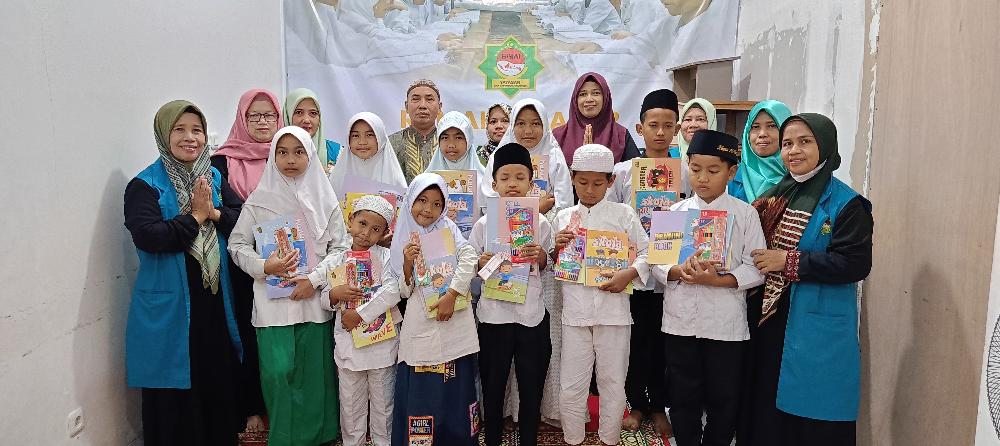
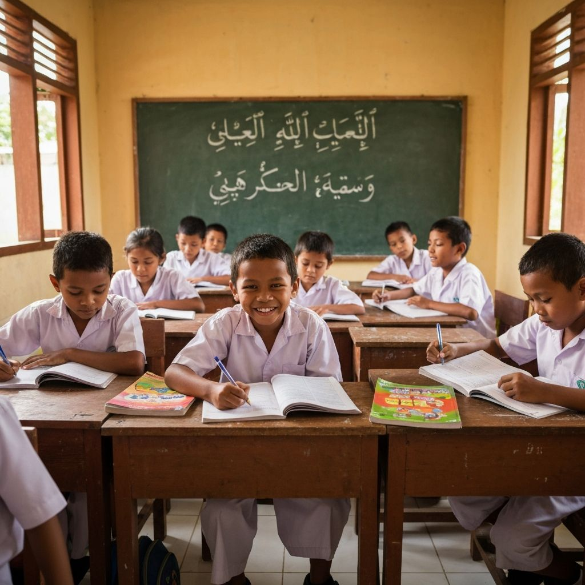
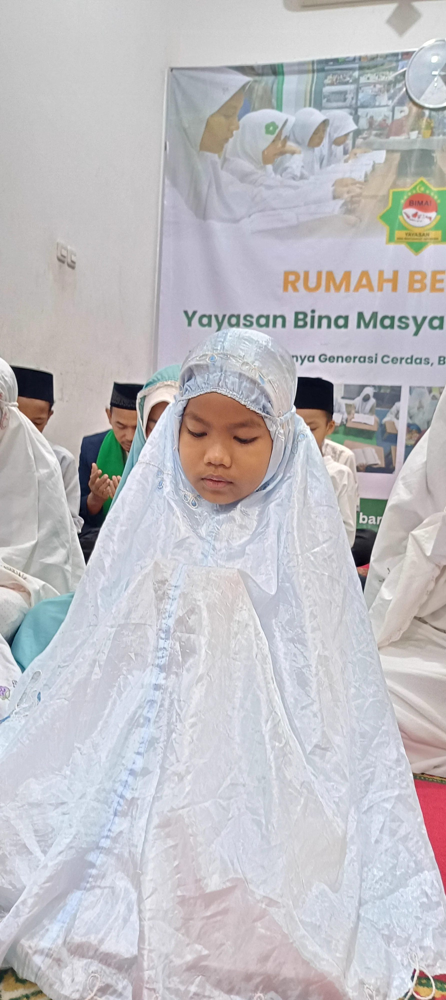
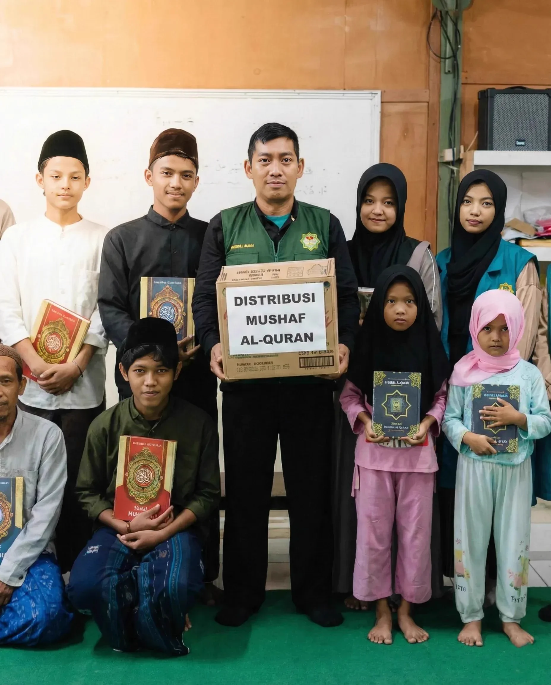
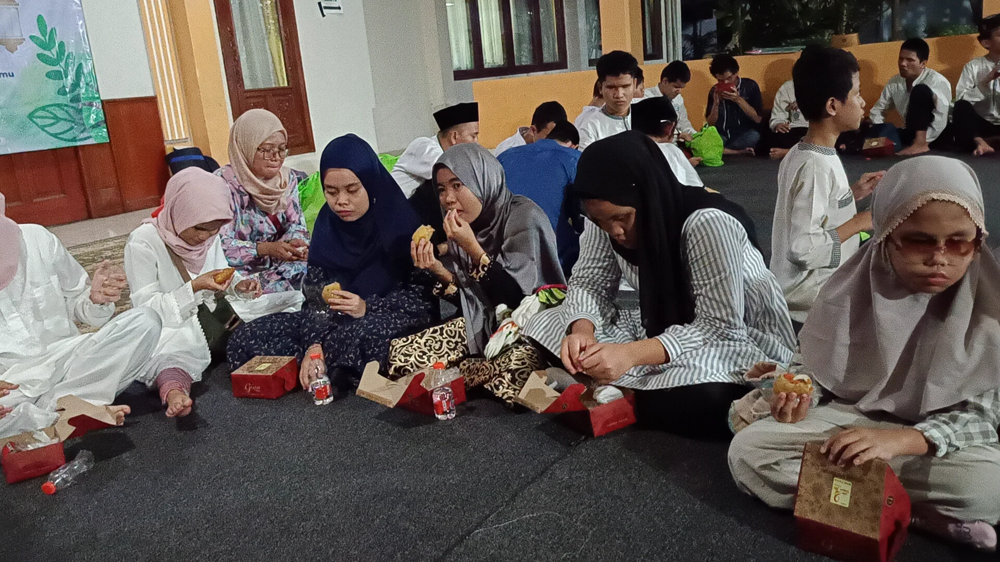
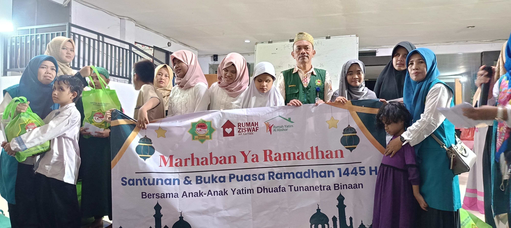
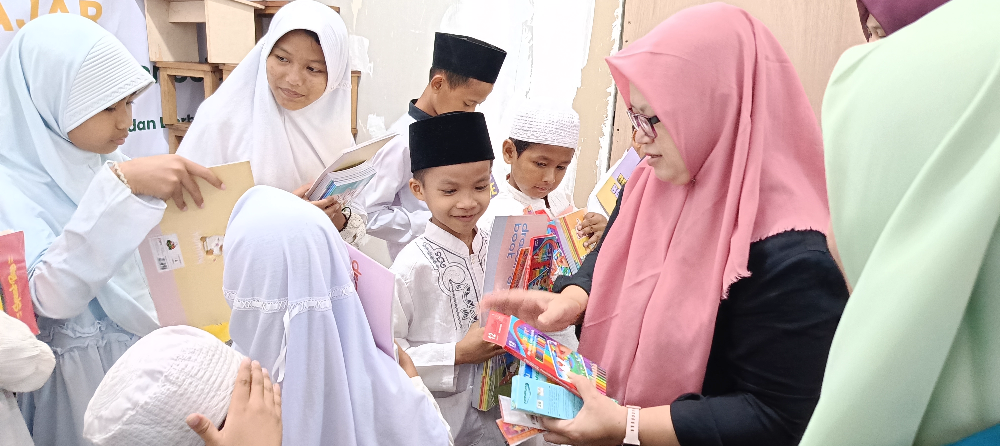
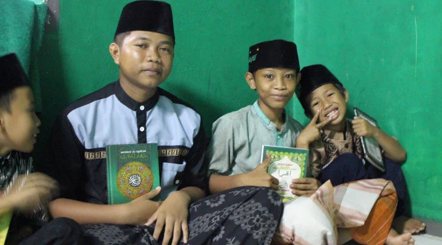
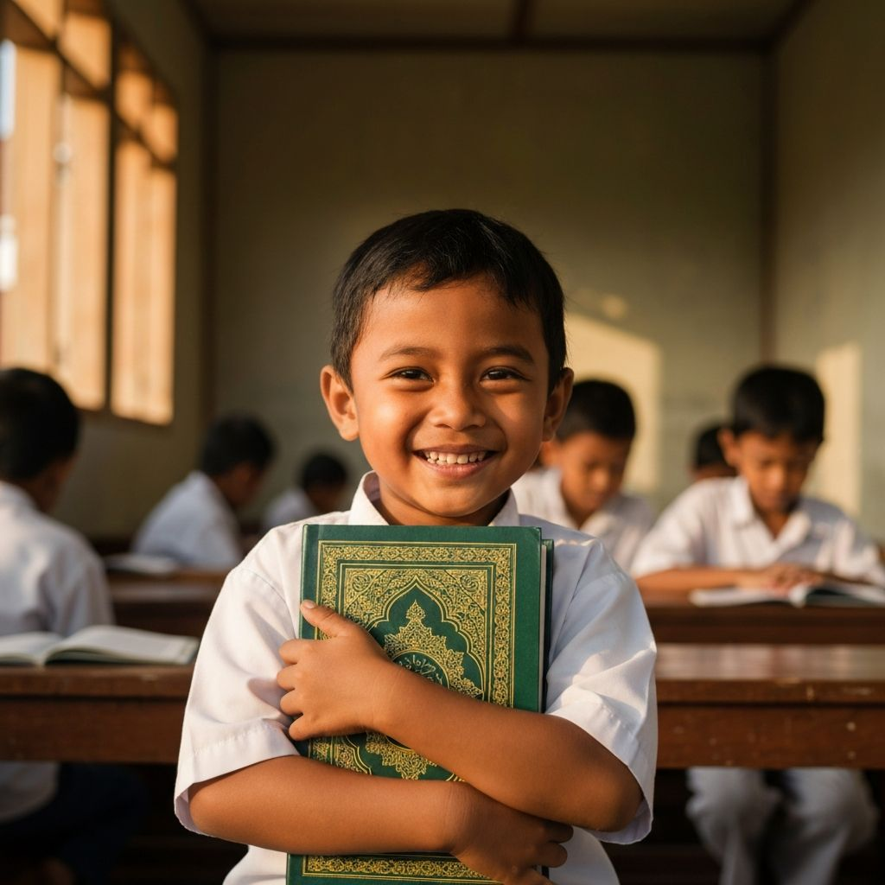

Salurkan sedekah subuh Anda secara rutin sebagai wasilah spiritual agar hajat dikabulkan, rezeki dilancarkan, dan keluarga dilindungi dari marabahaya.
مَا مِنْ يَوْمٍ يُصْبِحُ الْعِبَادُ فِيهِ إِلاَّ مَلَكَانِ يَنْزِلاَنِ فَيَقُولُ أَحَدُهُمَا اللَّهُمَّ أَعْطِ مُنْفِقًا خَلَفًا ، وَيَقُولُ الآخَرُ اللَّهُمَّ أَعْطِ مُمْسِكًا تَلَفًا
"Tidak ada satu subuh pun yang dialami hamba-hamba Allah kecuali turun kepada mereka dua malaikat. Salah satu di antara keduanya berdoa: 'Ya Allah, berilah ganti bagi orang yang menginfakkan hartanya', sedangkan yang satu lagi berdoa: 'Ya Allah, berilah kerusakan bagi orang yang menahan hartanya'."
Hadits Riwayat Bukhari & Muslim
Tawasul adalah mendekatkan diri kepada Allah melalui amal shalih. Anda dapat meniatkan Sedekah Subuh Al-Muqit ini khusus untuk ikhtiar hajat Anda:
Ikhtiar pembuka jalan kesembuhan bagi diri atau keluarga tercinta yang sedang diuji sakit.
Memohon keberkahan dan kemudahan dalam pekerjaan, bisnis, serta pintu rezeki yang halal.
Perisai spiritual pelindung seluruh anggota keluarga dari musibah dan marabahaya.
Wasilah tulus memohon agar keinginan mulia Anda lekas dijawab dan dimudahkan Allah.
Doa Saat Bersedekah Subuh
اللَّهُمَّ أَعْطِ مُنْفِقًا خَلَفًا
"Allahumma a'thi munfiqan khalafan"
Artinya: "Ya Allah, berikanlah ganti (yang berkah dan berlipat ganda) bagi orang yang menginfakkan hartanya." (HR. Bukhari)
Awal hari Anda langsung dikawal oleh doa khusus malaikat yang memohonkan ganti rezeki melimpah bagi Anda.
Subuh adalah waktu yang didoakan keberkahannya secara langsung oleh Rasulullah SAW untuk umatnya.
Sedekah yang dikeluarkan secara sembunyi-sembunyi di pagi hari memadamkan murka Allah dan menutup pintu musibah.

Geser/swipe kartu di bawah untuk melihat program rutin kebermanfaatan umat:

Penyaluran mushaf Al-Qur'an baru untuk santri penghafal Quran, masjid pelosok, dan komunitas tunanetra.

Pembagian makanan bergizi gratis untuk jemaah subuh, pekerja harian, dan dhuafa di sekitar kita.

Penyaluran bantuan dana kebutuhan pokok dan pendampingan kesejahteraan bagi penyandang disabilitas serta anak yatim.

Bimbingan belajar dan pendidikan karakter gratis bagi anak-anak dari keluarga pra-sejahtera agar tetap bisa meraih cita-cita.

Menyelenggarakan doa bersama santri yatim penghafal Quran untuk mendoakan hajat khusus para donatur.
Bukti aktivitas harian tim relawan di lapangan dalam menyalurkan amanah donatur:






Kisah tulus dari para donatur tentang keberkahan sedekah subuh rutin:
"Sedekah subuh rutin menjadi wasilah terkabulnya doa-doa yang saya panjatkan. Alhamdulillah setiap doa yang saya langitkan, Allah SWT mudahkan jalannya satu per satu."
"Membiasakan amalan sedekah subuh secara rutin dengan izin Allah memberikan ketenangan hati yang luar biasa, bahkan saya dimudahkan lulus sidang dan diterima kerja di tempat impian."
"Saya rutin meniatkan sedekah subuh sebagai ikhtiar tawasul demi kesembuhan suami dan kelancaran pendidikan anak-anak. Keberkahan waktu subuh benar-benar nyata dirasakan keluarga kami."